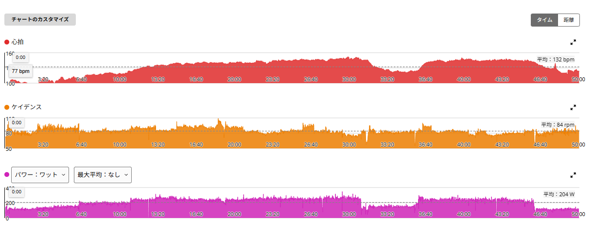
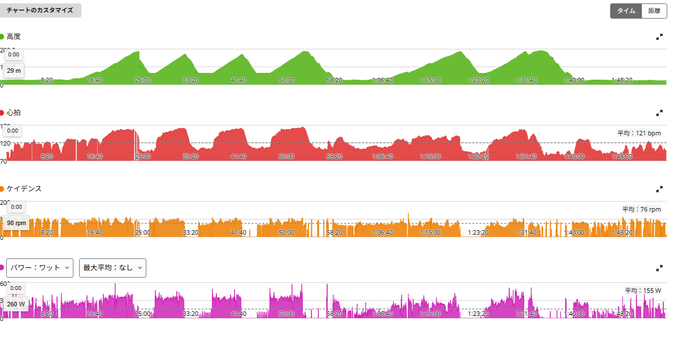
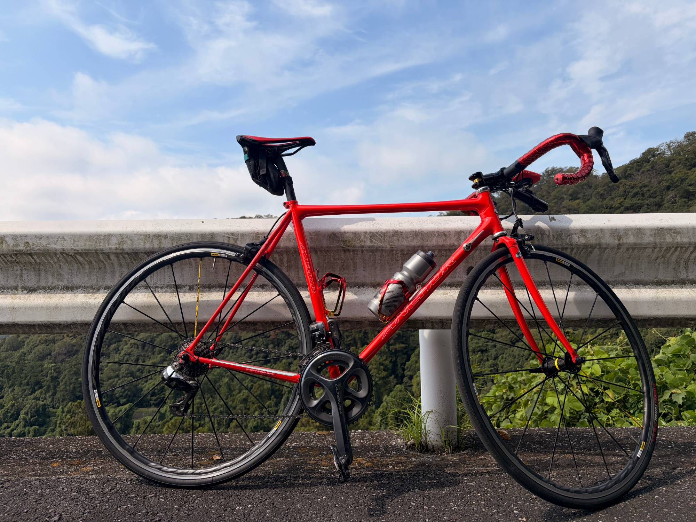
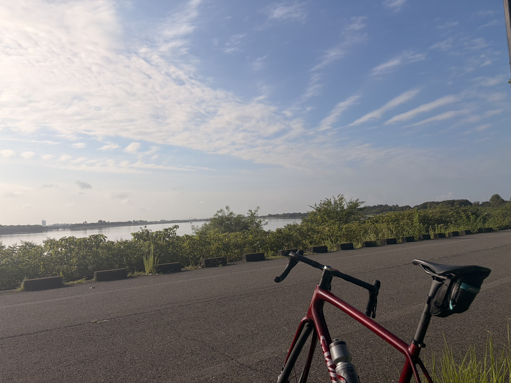
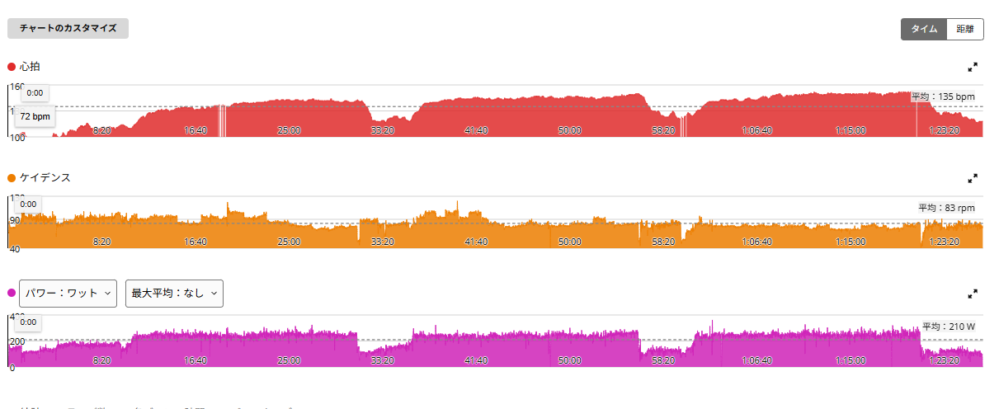

AIと喧嘩しながら
富士ヒルゴールドを目指すブログ
-
2019
熱中期
富士ヒルを1時間8分で駆け上がった。平均286W、当時67kg。
-
2023
再挑戦
もう一度走った富士ヒルは1時間16分。ゴールドは遠かった。
-
2024
再燃前夜
気づけば75kg。ちょこちょこ乗るうちに、もう少しちゃんと走りたい欲が戻ってきた。
-
2026
再起動
AIと喧嘩しながら、もう一度ゴールドリングへ。これはその実験ログ。
最新記事
実験記事、検証、旧ブログ発掘を新しい順に並べます。


脚は動く。心拍も普通。でも今日は続けたくなかった
ローラーでSST系のはずが50分で終了。20分246W、10分236Wで心拍ゾーン4は28秒だけ。身体ではなく気持ちが先に切れた日と、完全レストの翌日は入りが悪いのではという話。
ローラー練習 / ローラー / SST途中終了
ゴルビーは4本。でも最後は頂上まで踏んで332W
時間の都合でゴルビーは4本。328W・328W・323W・332Wの9W差で揃い、4本目は5分41秒まで延長してNP339W。そのあと友人と唐沢を2本追加し、夜は値引きシールだらけの宴会。
外ライド・実走 / ゴルビー / 唐沢
久しぶりに唐沢をゆっくり。ANCHORだと同じ山が少し違って見える
平坦60/30の翌日、ANCHOR RNC7で唐沢をゆっくり登った日。平均150W・平均心拍116bpmでTSS54.8。回復走というより軽め通常ライドだった記録と、ボトルケージの話。
外ライド・実走 / 唐沢 / ANCHOR RNC7
坂じゃない60/30。平坦でやったら、身体全体が重くなる疲れ方だった
渡良瀬遊水地で初めて平坦の60秒ON／30秒OFF。1セット目は平均374Wで振れ幅21W、2セット目は32Wに広がった。次の課題は出力を上げることではなく、狙った出力へ入る技術。
外ライド・実走 / 渡良瀬 / 平坦60秒ON30秒OFF
20分×3本。最後は高ケイデンスを捨てて246Wまで戻した
ローラーで20分×3本。244W・240W・246Wと揃ったが、3本目は高回転ではパワーが出ず70〜80rpmへ落として対応。疲労状態で使えるケイデンスは変わるという話。
ローラー練習 / 20分×3本 / ケイデンス
6つの実験
読者が興味のあるテーマから入れるように、まずはこの6つで始めます。

昔の記事を、今の脚とAIで読み直す
旧ブログ「ロードバイク時々マウンテン」からWayback Machineで記事を発掘しました。 メインではなく、必要な時に今の挑戦へ接続する素材庫として使います。